Lecture 4「LLM Training」日本語要約【講義スライド12枚付き】
大規模言語モデルを「大量の文章から次のトークンを予測する基盤モデル」から「指示に沿って役立つ応答を返すアシスタント」へ変える工程を、計算量、GPUメモリ、学習データ、評価の観点から順に解きほぐす。講義内容と、一次資料に基づく補足・補正は明確に分けている。
3 行サマリ
- 事前学習では、ウェブ文書、コード、多言語資料からなる巨大なコーパスをトークンへ分け、次トークン予測を通じて言語とコードの共通知識を学ぶ。モデル規模とトークン数は、計算予算の中で釣り合わせる必要がある。
- 学習を阻むのは演算器の速さだけではない。GPUメモリ容量とメモリ間のデータ転送が重要であり、各種の並列化、ZeRO、FlashAttention、混合精度学習は、それぞれ異なる制約を解く。
- 教師あり微調整で指示に応じる振る舞いを教え、選好調整で人の意図や安全方針へ近づける。LoRAは更新を低ランク行列へ絞り、QLoRAは凍結した基盤モデルを4ビットで保持して、追加学習のメモリをさらに減らす。
読み分け：通常の本文と表は、講義および公式スライドを再構成したものである。青・黄の「一次資料による補足／補正」は、講義で省略、保留、単純化された点を原論文や公式文書で補ったものであり、講師の発言そのものではない。
1. 講義の位置づけとLLM trainingの全体像
この節では、大規模言語モデル（Large Language Model、LLM）の学習を、言語とコードの共通知識を得る段階から、用途に合う応答を身につける段階まで俯瞰する。後の節で扱う技術が、工程のどこで、何の制約を解くのかを先に位置づける。
用途ごとにモデルをゼロから学習すると、文章理解やコード理解のような共通知識まで毎回学び直すことになる。そこで使うのが転移学習（transfer learning）である。広いデータから得た重みを別の課題の出発点として再利用し、高価な共通知識の学習と、比較的安価な用途別調整を分離する。
LLMではまず、収集・整備した文書集合である事前学習コーパスを、モデルが扱う文字、部分語、記号などのトークンへ分ける。そして、直前までのトークンから次のトークンを予測する事前学習を行い、言語やコードのパターンを重みに取り込む。この段階で得られるのが基盤モデル（base model）である。
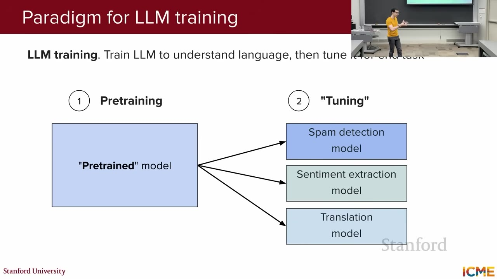
画像の読み解き：左側の大きな事前学習済みモデルが言語とコードの共通知識を担い、右側の小さな分岐が迷惑メール判定、感情抽出、翻訳といった用途への適応を担う。高価な基盤学習を使い回せることが、現代のLLM開発を経済的に成り立たせている。
基盤モデルを得た後には、必要に応じて用途に近い文章で次トークン予測を続ける中間学習（mid-training）を挟む。その後、指示と模範回答の組で教師あり微調整（Supervised Fine-Tuning、SFT）を行い、「質問には回答する」といった応答形式を教える。さらに、同じ質問への複数の候補を比較した選好データを使い、人の意図や安全方針へ振る舞いを近づける。この調整を講義では広くアラインメント（alignment）と呼ぶ。
段階を分ける意味は、更新対象を見分けやすくすることにある。事前学習と中間学習は主に知識・表現・能力の土台を整え、SFTは指示への応答形式を教え、選好調整は複数の妥当な応答のうち何を好むかを変える。ただし境界は完全ではなく、各段階が知識と振る舞いの両方へ影響することはある。
大量コーパス・次トークン予測"] B --> C["基盤モデル
言語・コードのパターン"] C -. "任意：用途に近いデータで継続学習" .-> D["中間学習"] C --> E["SFT / 指示チューニング
指示と模範回答"] D --> E E --> F["指示追従モデル"] F --> G["選好チューニング
Lecture 5"] G --> H["調整済みアシスタント"]
図をクリックすると拡大・移動できる。破線の中間学習は、講義終盤で紹介された任意の段階である。
前回の復習では、疎・密なMixture of Experts（専門家混合）、貪欲探索、ビーム探索、サンプリング、温度、Key-Value（KV）キャッシュなど、推論時の最適化を確認した。今回の焦点は、その推論に使うモデルをどう学習し、どう役立つモデルへ変えるかである。
中間試験は2025年10月24日15:30–17:00で、Lecture 1–4が範囲。選択式と自由記述を含む資料持ち込み不可の形式で、電卓は不要、コースサイトのチートシートは学習用だが持ち込み不可と案内された。期末試験は12月10日19:00–20:30で、Lecture 5–9が範囲である。
2. Pretraining：taskではなくlanguageとcodeを先に学ぶ
この節では、事前学習がどのような文書集合を、どの単位へ分け、どの目的関数で学ぶのかを説明する。コーパス、トークン、損失、FLOPという四つの概念をつなぎ、文章の量が実際の学習計算へ変わるまでを追う。
Traditional MLからtransfer learningへ
事前学習（pretraining）とは、特定課題の正解例を教える前に、広いデータから汎用的な規則や知識をモデルの重みへ取り込む段階である。迷惑メール判定、感情抽出、翻訳を別々にゼロから学ぶより、共通する文章理解を一度学び、各課題へ適応する方が計算とデータを再利用できる。
目的関数とdata mixture
学習材料となる事前学習コーパスは、収集して選別した文書とコードの集合である。講義はCommon Crawl、Wikipedia、Reddit、GitHub、Stack Overflowを例示する。英語、多言語、コードなどの混合比率は、モデルが何を多く観察するかを決めるため、後の得意分野に影響する。
文書はそのまま一件ずつモデルへ渡すのではなく、トークナイザーで文字、部分語、句読点、コード記号などのトークンへ分割する。トークンはモデルが予測する単位であると同時に、学習量を数える単位でもある。同じ文字数でも分割方法が違えばトークン数は変わり、重複文書を除けば実際に学ぶ情報量も変わるため、「何ページ集めたか」だけではデータ量を比較できない。
デコーダー専用LLMは、直前までの列を条件に次のトークンを当てる因果言語モデリングを行う。正解へ高い確率を割り当てるほど小さくなる負の対数尤度を使えば、列全体の予測を一つの損失として最適化できる。
この式が必要なのは、各位置の予測を同じ基準で足し合わせ、勾配降下法で重みを更新できる形へするためである。たとえば正解トークンの確率が0.5なら、その位置の損失は−log(0.5) ≈ 0.693、0.1なら−log(0.1) ≈ 2.303となる。自信を持って間違う予測ほど大きく罰し、正解確率を1へ近づける直観である。実装では、列やミニバッチの大きさに依存しないよう和ではなく平均を報告することも多い。
Common Crawlは、公開ウェブのクロールデータを提供する非営利プロジェクトである。しかし、生のウェブ文書をそのまま学習品質と見なすことはできない。品質フィルタ、重複除去、言語・分野の配分に加え、ライセンス、個人情報、安全性への処理が必要になる。したがって、コーパス設計とは量を増やす作業だけでなく、何を残し、何を除くかを決める作業でもある。
この規模の計算量は、FLOP（Floating-Point Operation、浮動小数点演算）の総数で表す。処理するトークン数とパラメータ数が増えれば、前向き計算、逆伝播、重み更新に必要な演算も増える。FLOPを使うと、GPUの機種や台数とは切り離して学習仕事量を概算できる。ただしFLOPは「仕事の総量」であり、「1秒にどれだけ処理できるか」ではない。この違いは次節で整理する。
Llama 3論文は15.6兆トークンという量に加え、重複除去、品質分類器、分野・言語の配分、学習終盤のアニーリング用データを詳述する。生のウェブページ数をそのまま品質と見なすことはできず、データ整備そのものがモデル設計の一部である。
3. FLOP・FLOP/s・scaling law・Chinchilla law
この節では、学習に必要な演算の総量と、ハードウェアが演算を処理する速さを区別する。そのうえで、限られた計算予算をパラメータ数と学習トークン数へどう配分するかを、スケーリング則とChinchilla則から読み解く。
| 表記 | 意味 | 何を測るか |
|---|---|---|
| FLOP / FLOPs | Floating-Point Operation(s)、浮動小数点演算 | 学習に必要な演算の総量。おおむねパラメータ数、トークン数、アーキテクチャ由来の係数の積で増え、学習費用を比べる物差しになる。 |
| FLOP/s（講義ではFLOPS） | Floating-Point Operations Per Second、1秒当たりの浮動小数点演算回数 | GPUなどが演算を処理する速度。数値精度や疎性などの条件で値が変わる。所要時間は概念上「総FLOP ÷ 実効FLOP/s」だが、通信やメモリ待ちがあるため、理論値どおりにはならない。 |
たとえば総仕事量が同じでも、GPUの実効速度が2倍なら理想的な学習時間は半分になる。一方、理論上のFLOP/sが高くても、GPU間通信やメモリ読み書きで演算器が待てば実効速度は下がる。したがって、FLOPはモデルとデータの規模を設計する指標、FLOP/sは実行環境の速さを測る指標として分けて考える。
Kaplanらのスケーリング則（scaling law）は、計算量、データ量、モデル規模を増やすと、予測損失がべき乗則に沿って滑らかに下がるという経験的関係を示した。大きいモデルは同じ観測トークン数でも低い損失へ達しやすいという意味で、データを効率よく利用できる。ただし計算予算は有限なので、モデルだけを大きくするか、より多くのトークンを見せるかという配分問題が残る。
Chinchilla研究は、固定した計算量の下で400を超えるモデルを比較し、モデル規模と学習トークン数をおおむね同じ割合で増やす方がよいと推定した。講義では、その結果を覚えるための近似的な目安として次の式を紹介する。
この式では、10億パラメータなら約200億トークンが目安になる。1750億パラメータのGPT-3へ当てはめれば約3.5兆トークンとなるのに対し、実際の学習量は約3000億トークンなので、この基準ではモデル規模に対してデータが少ない「学習不足」側と解釈される。式はモデルの品質を直接保証するものではなく、限られた計算を二つの軸へどう分けるかを考えるために使う。
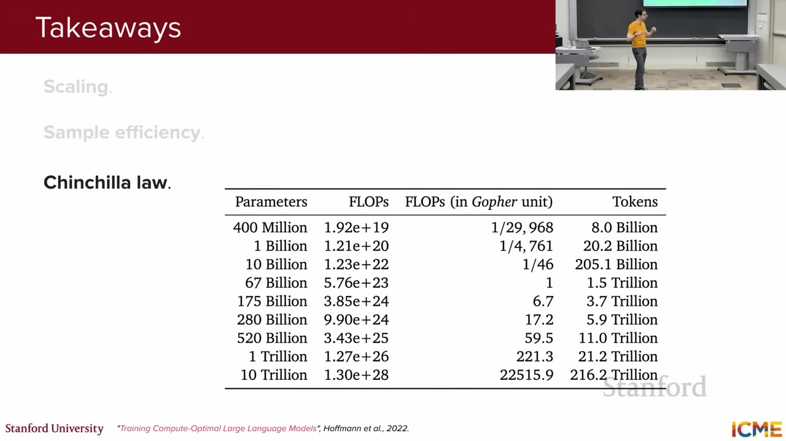
画像の読み解き：表が示すのは単純な「大きいほどよい」ではなく、固定した計算量をモデルの大きさとデータ量へどう分けるかである。モデルだけを巨大化してトークン数を据え置くと、多数のパラメータを十分に調整する観測が足りなくなる。
これは特定の密なTransformer、データ、最適化手法、計算予算から得た経験則である。アーキテクチャ、データ品質、同じデータの反復、推論費用をどれほど重視するかによって最適点は変わる。講義の質疑応答でも、実務では小規模な試行から自分の条件で曲線を推定し、Llama 3のように外挿すると説明した。
Pretraining固有の課題
規模を適切に配分しても、事前学習そのものに伴う問題は残る。主な制約は次の四つである。
- 費用・時間・電力：講義が示す規模感は少なくとも数百万ドルで、モデルによっては数千万〜数億ドルに達する。
- 知識の締切：学習コーパスを締め切った後の出来事は、重みだけから新たに知ることができない。
- 知識編集：新しい事実を加えながら、他分野の能力を後退させないよう重みを更新するのは難しい。
- 記憶と盗用の危険：次トークン予測モデルが、学習文書の一部をそのまま再現する可能性がある。
つまり、スケーリング則は計算配分の指針にはなるが、データの権利、鮮度、品質や、学習後の安全な更新までは解決しない。
4. Training loopのmemory内訳と分散parallelism
この節では、学習中にモデルの重み以外の何がGPUメモリを使うのかを分解する。そのうえで、データ並列、テンソル並列、パイプライン並列、ZeROが、それぞれデータ、計算、学習状態のどれを機器間に分けるのかを具体例で比較する。
Trainingは、parameter初期化、forward pass、loss、backward pass、optimizer updateを繰り返す。ここで「重みがGPU memoryへ収まる」とは、modelのparameterだけを置けるという意味にすぎない。推論では主に重みと現在の計算に必要な一時値を使えばよいが、学習ではさらに、各層のactivation、各重みのgradient、Adamなどのoptimizer state、低精度学習用のFP32 master weightを同時に保持する。そのため、重みだけなら収まるmodelでも、学習を始めると追加領域が足りずOut Of Memory（OOM）になることがある。
10億parameterをFP16で保存すると、重み本体は 10億 × 2 byte ≈ 2GB であるため、24GB GPUなら十分に見える。しかし一般的なAdamによる混合精度学習では、概算としてFP16重み約2GB、gradient約2GB、更新精度を保つFP32 master weight約4GB、Adamの1次・2次moment各約4GBを使い、parameter数に比例する学習stateだけで合計約16GBになり得る。ここへ入力mini-batch、各層のactivation、attentionの中間値、一時workspaceが加わるため、24GBを超える可能性がある。
つまり「重みが収まるなら学習もできる」とは限らないのは、推論は主に重みを読む処理だが、学習は重みに加えて、逆伝播と更新に必要な複数の同サイズstateを持つ処理だからである。必要量はbatch size、sequence length、optimizer、precisionにも依存する。不足する場合は、batchを小さくする、gradient checkpointingでactivationを再計算する、ZeROで学習stateを複数GPUへ分割する、LoRAで更新対象を減らす、といった対策を使う。
| 保持物 | 役割 | 主な増加要因 |
|---|---|---|
| Parameters | modelの学習対象weight。 | parameter数、保存precision。 |
| Activations | forwardの中間値。backpropのchain ruleで必要。 | batch size、sequence length、layer数・hidden幅。attentionは標準実装でsequence長の2乗項を持つ。 |
| Gradients | 各parameterをloss低下方向へ動かす微分値。 | trainable parameter数、precision。 |
| Optimizer states | Adamならgradientの移動平均である1次momentと、その2乗の移動平均である2次momentなど。updateの方向とstep幅を安定させる履歴である。 | parameter数に比例し、FP32 master weightを含む実装ではparameter本体より大きくなり得るため、分散・省memory化の主要対象になる。 |
講義例のNVIDIA H100は80GB VRAMであり、billion〜hundreds of billions級modelの全stateは1枚に収まらない。そこで複数GPUへdataまたはmodel computationを分ける。
Data parallelismとZero Redundancy Optimizer（ZeRO）
Data parallelism：モデルは同じ、データだけを分ける
Data parallelism（DP、データ並列）は、同じmodelと同じoptimizer stateを各GPUへ丸ごと複製し、mini-batchだけを分けて同時に処理する方式である。例えば全体256件のmini-batchを4 GPUで処理するなら、各GPUが同じmodelを使って64件ずつforward / backwardを実行する。1台で256件を順番に処理するより、多数のexampleを並列に計算できることが利点である。
同じmodelの全copy
forward + backward"] B1 --> G1["GPU 1
同じmodelの全copy
forward + backward"] B2 --> G2["GPU 2
同じmodelの全copy
forward + backward"] B3 --> G3["GPU 3
同じmodelの全copy
forward + backward"] G0 --> AR["All-reduce
4台のgradientを合計・平均"] G1 --> AR G2 --> AR G3 --> AR AR --> U["全GPUが同じ平均gradientで
同じmodelへupdate"]
Data parallelismの1 training step。図をクリックすると拡大・移動できる。
各GPUは異なるdataを見ているため、backwardで得るgradientも少しずつ異なる。そのまま更新すると4台のmodelが別物になってしまう。そこでall-reduceという集団通信を使い、全GPUのgradientを合計・平均し、その同じ結果を全GPUへ配る。全GPUが同一の平均gradientで更新するため、次のstepでもmodelの重みは一致する。
各GPUがmodelのparameter、gradient、optimizer stateをすべて持つため、同じ学習stateがGPU台数分だけ重複する。4台の合計memoryが320GBあっても、1台80GBに収まらないmodelは、単純なData parallelismでは置けない。増やせるのは主に処理data量であり、1台当たりのmodel state容量は減らない。
ZeRO：重複していた学習stateをGPU間で分担する
Zero Redundancy Optimizer（ZeRO）は、Data parallelismで各GPUが重複保持していた学習stateを分割する仕組みである。分散学習に参加する各GPU processをrankと呼び、1つの大きなstateをrankごとの異なる断片へ切ることをshardingという。4 GPUなら、分割対象のstateは原則として各rankが約4分の1ずつ担当する。
各GPU: Parameter 全部
Gradient 全部
Optimizer state 全部"] Z1["ZeRO Stage 1
Parameter 全部
Gradient 全部
Optimizer state 1/N"] Z2["ZeRO Stage 2
Parameter 全部
Gradient 1/N
Optimizer state 1/N"] Z3["ZeRO Stage 3
Parameter 1/N
Gradient 1/N
Optimizer state 1/N"] DP -->|"Optimizer stateを分割"| Z1 Z1 -->|"Gradientも分割"| Z2 Z2 -->|"Parameterも分割"| Z3
NはGPU数。Stageを上げるほど1台当たりmemoryは減るが、必要な断片を集める通信は増える。
ZeROはmodelの計算を省略する技術ではない。各rankが担当しないstateを永久に見なくてよいわけでもなく、forward / backwardで必要になったparameterなどは、その時点だけ通信で集める。つまり、保存時は分割してmemoryを節約し、計算時は必要な範囲だけ一時的に組み立てる。
| 段階 | 各GPUが全部持つもの | GPU間で分割するもの | 4 GPUでの直観 | 追加される通信 |
|---|---|---|---|---|
| 通常のDP | Parameter、gradient、optimizer state | なし | 全GPUが同じ3種類を100%保持 | Gradientのall-reduce |
| Stage 1 | Parameter、gradient | Optimizer state | 大きなAdam momentなどを各GPUが約25%ずつ担当 | 担当rankで更新したparameter断片を同期 |
| Stage 2 | Parameter | Optimizer state、gradient | 各GPUは担当parameterに対応するgradient約25%だけを保持 | Gradientを担当rankへ集約するreduce-scatter |
| Stage 3 | 原則として全model stateを常時複製しない | Optimizer state、gradient、parameter | 3種類すべて約25%ずつ担当 | 各layerの計算前に必要parameterをall-gatherし、使用後に破棄・再分割 |
Stage 3の1 layerを計算する流れ
- 平常時、各rankはそのlayerのparameterを一部分だけ保持する。
- そのlayerのforward直前に、all-gatherで各rankの断片を集め、完全なparameterを一時的に組み立てる。
- 各rankが自分のmini-batch断片についてlayerを計算する。
- 完全なparameter copyを保持し続けず、不要になったら解放してshard状態へ戻す。
- backwardで得たgradientはreduce-scatterで合計しながら分割し、各rankは担当分だけを保持・更新する。
Stage 3は最もmemoryを減らせるが、layerごとのparameter収集が増える。modelがStage 1や2で収まるなら、その方が通信が少なく高速な場合がある。選択基準は、まず必要memoryへ収められる最小Stageを選び、そのうえでnetwork帯域と実測throughputを比較することである。
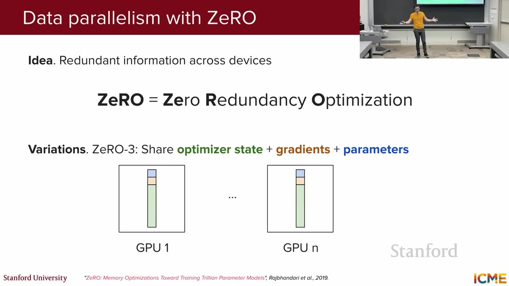
画像の読み解き：各GPUの細い色付き棒は、全状態の複製ではなく、それぞれが受け持つ断片を表す。参加ランクが増えるほど分割対象の1台当たり容量は小さくできるが、活性値など分割していない領域まで同じ割合で減るわけではない。また必要な断片を集める通信が増えるため、最も高い段階が常に最速とは限らない。
講義音声とスライドは「share」と表現するが、ZeROの実体は状態のpartition / sharding（分割保持）である。全GPUが同じ複製を共有して持つのではなく、各ランクが別の断片を持つ。
Model parallelism
モデル並列（model parallelism）は、モデルの計算そのものを複数GPUへ分ける方式の総称である。データ並列が入力例を分けるのに対し、モデル並列は一つの入力を処理する重みや層を分ける。
テンソル並列（tensor parallelism）は、一つの大きな行列積を行または列方向へ切り、複数GPUで同時に計算する。たとえば出力幅8192の線形層を4台で列分割すれば、各GPUが2048列分を担当する。ただし次の演算へ渡すために部分結果を集めたり合計したりする集団通信が層ごとに発生しやすく、通常は高速な相互接続が必要になる。
パイプライン並列（pipeline parallelism）は、連続する層のまとまりを別GPUへ置く。24層を4段へ分けるなら、各段が6層ずつを担当する。一つの大きなバッチを小さなマイクロバッチへ分け、前段が次のマイクロバッチを処理している間に後段が前のものを処理することで、流れ作業にする。開始時と終了時には一部の段が待つパイプライン・バブルがあり、マイクロバッチ数、段ごとの計算量、段間通信の釣り合いが性能を左右する。
| 方式 | 何を分割するか | 講義での直観 |
|---|---|---|
| Tensor parallelism | 一つの大きな行列積 | 重み行列を行・列方向へ切り、同じ層を複数GPUで同時に計算する。 |
| Pipeline parallelism | 連続する層のまとまり | GPU 1が層1–3、GPU 2が層4–6というように段階化し、マイクロバッチを流す。 |
| Expert parallelism | Mixture of Experts（MoE）の専門家 | 異なるフィードフォワード専門家を別の機器へ置き、選ばれた専門家へトークンを送る。 |
| Sequence / context parallelism | 系列の方向 | 公式スライドに列挙された方式群。長い文脈の活性値やアテンション計算を系列方向に分ける。 |
実際の大規模学習では、データ並列、ZeRO、テンソル並列、パイプライン並列を組み合わせることがある。選択基準は「何台使えるか」だけではなく、1台のメモリ、GPU内の計算量、機器間の通信帯域、系列長、バッチ構成である。メモリを減らす分割が通信を増やすため、容量と速度の両方を測って設計する必要がある。
5. FlashAttention：演算数よりmemory I/Oを減らす
この節では、GPU内のメモリ階層を出発点に、FlashAttentionがなぜ「計算を少し増やしても速くなる」のかを説明する。大容量だが演算器から遠いHBMと、小容量だが近いSRAMの間でデータを運ぶ回数に注目し、タイル分割、オンラインsoftmax、逆伝播時の再計算を順に追う。
GPUのHigh Bandwidth Memory（HBM、高帯域メモリ）は、モデル、活性値、入出力を置く大容量の外部メモリである。一方、演算チップ上のStatic Random-Access Memory（SRAM、静的ランダムアクセスメモリ）は容量が小さいが、演算器から高速に利用できる。演算器が積和計算を終えても、HBMから次のデータが届くまで待つなら、処理は計算能力ではなくメモリ入出力に制約される。
標準的なアテンションは、問い合わせと鍵の積でスコア行列を作り、行ごとにsoftmaxで確率へ変え、その確率で値を加重平均する。
たとえばdk=64なら除数は√64=8である。系列長をnとすると、QKTは各ヘッドでn×nになる。n=8,192なら約6711万要素で、密なBF16行列として実体化するだけで約128MiBを要する。実際にはバッチ、ヘッド、層が重なるうえ、確率行列も扱うため、HBMへの書き出しと読み戻しが大きな負担になる。
タイル分割（tiling）では、巨大なQ、K、VをSRAMへ収まる小さなブロックへ切る。読み込んだブロックについて、スコア計算、softmaxの統計更新、Vとの積をできるだけチップ上で続け、巨大なスコア行列や確率行列全体をHBMへ保存しない。
難しいのは、softmaxの分母が本来は行全体のスコアを必要とする点である。FlashAttentionは、既に見たブロックの最大値と指数和を持ち、新しいブロックを読むたびに古い結果の尺度を補正するオンラインsoftmaxを使う。原論文の仕組みを簡略化すると、正規化に使う統計は次のように更新できる。
ℓnew = emold−mnewℓold + emb−mnewℓb moldとℓoldは既処理部分の最大値と、その最大値を基準にした指数和、mbとℓbは新しいブロックの同じ統計である。最大値を引くことで指数のオーバーフローを防ぎ、基準が変わった分だけ古い和を掛け直す。
具体例として、最初のブロックのスコアが[2, 1]なら、mold=2、ℓold=1+e−1≈1.368である。次のブロックが[3]なら新しい最大値は3となり、ℓnew=e−1×1.368+1≈1.503になる。これは三つを一度に計算したe−1+e−2+1≈1.503と一致する。出力の加重和も同じ係数で補正するため、全行を同時に保持しなくても、丸め誤差の範囲で通常のアテンションと同じ結果を得られる。
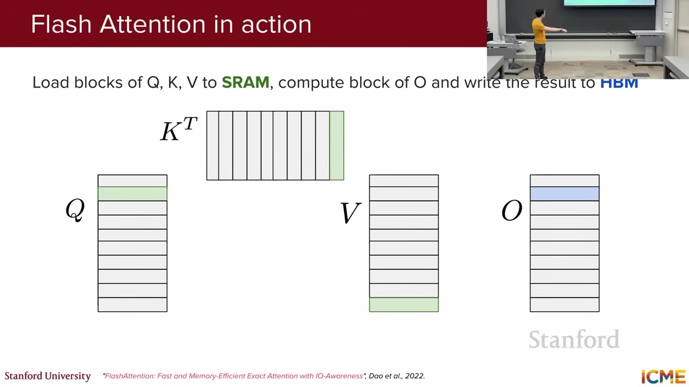
画像の読み解き：アテンション行列全体を保存せず、局所ブロックの内積、softmax統計、Vとの積をチップ上でつなげる。疎なアテンションのように一部の組合せを捨てる近似ではなく、計算順序を変えた厳密なアルゴリズムである。
Backwardでは保存せず再計算する
逆伝播で必要になる巨大なアテンション活性値も、前向き計算の時点でHBMへすべて保存しない。代わりに行ごとの最大値や正規化和など小さな要約統計を残し、逆伝播時に必要なブロックを再計算する。演算回数は増えるが、遅いHBMとの往復を大幅に減らせるため、メモリ使用量と実行時間の両方が下がり得る。
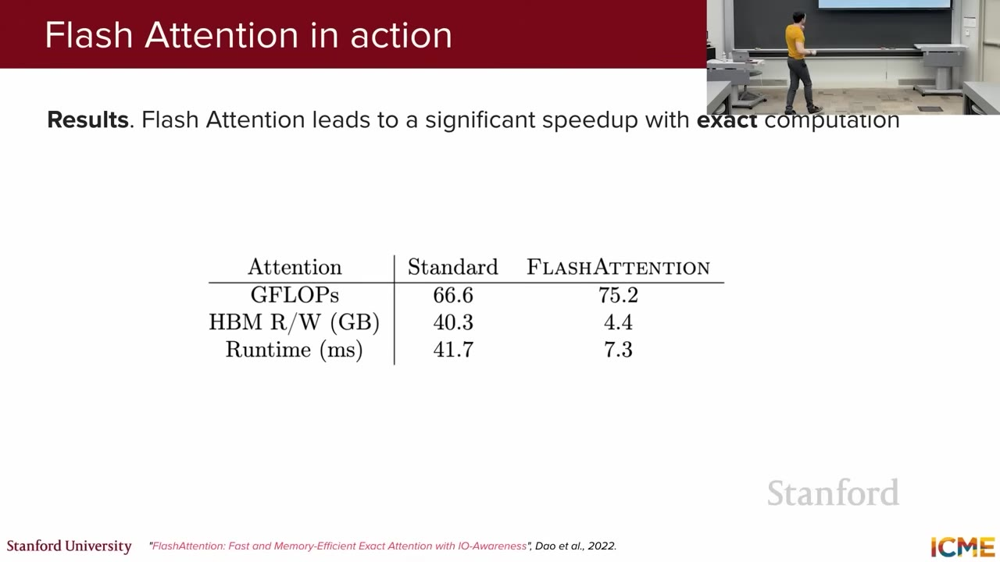
画像の読み解き：「演算を減らせば必ず速い」という単純な図式が破れる例である。示された条件では演算量が66.6から75.2 GFLOPへ増えても、HBMの読み書きが約10分の1となり、実行時間は41.7msから7.3msへ短くなった。再計算の費用よりデータ移動削減の利益が大きい。
原論文はSRAM容量を明示してI/O複雑度を分析し、系列長に対して2乗で増える標準アテンションの中間メモリを避ける。FlashAttention 2/3などは、同じ「I/Oを減らす」という核を、新しいGPUの実行方式へ合わせて改善する。効果の大きさは系列長、GPU、カーネル実装に依存する。
6. Quantizationとmixed precision training
この節では、数値を少ないビットで表す量子化と、演算ごとに数値形式を使い分ける混合精度学習を区別する。FP32、FP16、BF16の違いを確認し、量子化の尺度・ゼロ点・切り詰め・外れ値、そして混合精度での損失スケーリングまで、誤差と速度の釣り合いを説明する。
Floating-point表現
浮動小数点数は、正負を表す符号、値の桁を表す指数、有効数字を表す仮数部へビットを配る。FP32（32ビット浮動小数点）は広い範囲と細かな精度を持つ標準形式である。FP16（16ビット浮動小数点）は1要素の保存量を半分にでき、高速な専用演算器を使いやすいが、指数が5ビットなので表せる範囲が狭い。BF16（Brain Floating Point 16）はFP32と同じ8ビットの指数を残し、仮数部を7ビットへ減らした形式で、精度より範囲を優先する。
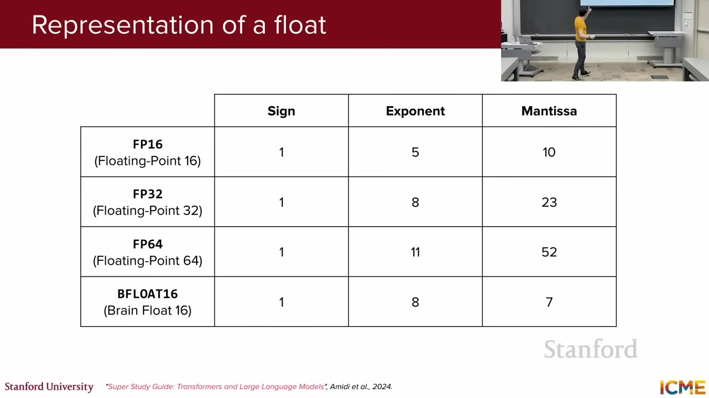
画像の読み解き：FP16とBF16は同じ16 bitでも性質が違う。BF16はFP32と同じ8-bit exponentを保つためrangeが広くoverflowしにくい一方、fractionは7 bitで精度が粗い。FP16はfractionが多いがrangeが狭い。
Quantization：細かい実数を、少数の「目盛り」へ置き換える
Quantization（量子化）は、weightやactivationをFP32のような細かい実数のまま保存せず、あらかじめ用意した少数の代表値へ丸めて、小さいinteger codeで表す方法である。直観的には、無限に細かく測れる定規を、目盛りの少ない定規へ交換する。元の値を完全には再現できないが、モデルが許容できる範囲の丸め誤差と引き換えに、保存量とmemory転送量を大幅に減らせる。
0.03, 0.31, 0.62, 0.95"] --> B["表現rangeと
目盛り幅scaleを決める"] B --> C["最も近いcodeへ丸める
0, 1, 2, 3"] C --> D["少ないbitで保存
2-bitなら4種類"] D --> E["計算時に代表値へ戻す
0, 0.33, 0.67, 1.0"]
量子化の基本フロー。元の値と復元値の差がquantization errorになる。
2-bitの簡単な例
2 bitでは 00, 01, 10, 11 の4種類しか表せない。実数rangeを0〜1と決めると、代表値を 0, 0.33, 0.67, 1.0 の4段階にできる。元の値 0.62 は最も近いcode 10へ丸められ、計算時には約0.67として扱われる。差の約0.05が丸め誤差である。
| 元の実数 | 2-bit code | 復元する代表値 | 誤差 |
|---|---|---|---|
0.03 | 00 | 0.00 | −0.03 |
0.31 | 01 | 0.33 | +0.02 |
0.62 | 10 | 0.67 | +0.05 |
0.95 | 11 | 1.00 | +0.05 |
実際のLLMでは2 bitよりINT8やINT4などを使うことが多く、tensor全体または小さなblockごとに代表値との対応を決める。推論時はcodeを一時的に浮動小数点へ戻して通常のmatrix multiplicationを行う場合と、対応hardwareのinteger演算kernelでcodeのまま計算する場合がある。
Scaleとzero-point：codeと実数を対応付ける
x̂ = scale × (q − zero-point)
xは元の実数、qは保存するinteger code、qminとqmaxはcode範囲、x̂は復元値。
例えばscale=0.1、zero-point=128の8-bit unsigned codeでx=1.23を表すと、q=round(12.3)+128=140、復元値はx̂=0.1×(140−128)=1.2となり、0.03の丸め誤差が生じる。
- Scale：隣り合うcodeの間隔、つまり定規の1目盛りが実数でいくつかを表す。小さいほど細かく表現できるが、同じbit数で扱えるrangeは狭くなる。
- Zero-point：実数の0をどのinteger codeへ対応させるかを表す。正負が偏ったrangeでも0を正確に表しやすくする。0を中心に対称な方式ではzero-pointを0に固定する場合もある。
- Dequantization：codeから代表的な実数値へ戻す処理。完全な元値ではなく、同じ目盛りへ丸められた値が復元される。
なぜ量子化するのか
| メリット | なぜ改善するか | 実務上の効果 |
|---|---|---|
| モデル容量を削減 | 1 parameter当たりのbit数を減らす | 同じGPUへより大きなmodelを載せる、または同時request数を増やせる。 |
| Memory bandwidthを削減 | 計算器へ読み込むweightのbyte数が減る | LLM推論でweight読込みがbottleneckの場合、token生成を高速化しやすい。 |
| Cache効率を改善 | 同じcache容量へ多くのweightを保持できる | 遅いmemoryへの往復を減らせる。 |
| 低精度演算を利用 | INT8 / INT4に対応したhardwareとkernelを使う | 条件が合えば演算throughputや電力効率を改善できる。 |
上の値は parameter数 × 1 parameter当たりのbyte数だけを数えた理論値であり、実際にはscaleなどのmetadata、embedding、runtime buffer、KV cacheも必要になる。また容量が減っても、hardwareとkernelがその形式を効率よく扱えなければ同じ比率では高速化しない。
精度低下はどこから生じるか
bit数を減らすほど使える目盛りが少なくなり、複数の異なる実数が同じcodeへ丸められる。特に問題になるのがclippingとoutlier（外れ値）である。
−0.8〜0.9付近に集中"] --> B["少数のoutlier
例: 12.0"] B --> C{"どのrangeを使うか"} C -->|"12.0まで含める"| D["1目盛りが粗くなる
通常値の丸め誤差が増える"] C -->|"rangeを狭くする"| E["通常値は細かく表現
12.0は端値へclipping"] D --> F["block別scaleや
outlierだけ高精度で保持"] E --> F
限られたcodeを通常値とoutlierへどう配分するかがqualityを左右する。
- Clipping：設定rangeを超えた値を最小値または最大値へ丸める。通常値へ多くの目盛りを使える一方、range外の情報を失う。
- Outlier：他より極端に大きい値。これにrangeを合わせるとscaleが大きくなり、多数の通常値を粗い目盛りでしか表せなくなる。
- Block-wise quantization：weightを小blockへ分け、blockごとにscaleを持つ。値の分布が近い範囲ごとに目盛りを最適化できる。
- 高精度での例外処理：影響の大きいoutlierや特定layerだけFP16 / BF16へ残し、それ以外を低bit化する。
どの段階で量子化するか
| 方式 | 何を量子化するか | 特徴 |
|---|---|---|
| Weight-only quantization | 主にmodel weight | LLM推論で導入しやすい。ActivationはFP16/BF16などを使い、weight保存と読込みを削減する。 |
| Weight + activation quantization | Weightと計算途中のactivation | さらにmemory・演算を減らせるが、activationのoutlier処理が難しくなる。 |
| Post-Training Quantization（PTQ） | 学習済みmodelを後から量子化 | 再学習costが小さい。少量のcalibration dataでscaleなどを決める場合がある。 |
| Quantization-Aware Training（QAT） | 学習中に量子化誤差を模擬 | Modelが丸め誤差へ適応しやすいが、追加trainingが必要。 |
Mixed precisionはFP16・BF16・FP32など複数の浮動小数点形式をoperationごとに使い分け、学習の速度と安定性を両立する考え方である。Quantizationは値を有限個の離散codeへ丸めて保存・計算を軽くする考え方で、特に推論やQLoRAのbase weight保存で使われる。両者は低bit化という点は共通するが、目的と数値表現が異なる。
| 手法 | 中心idea | 典型的な用途・注意 |
|---|---|---|
| Quantization | weightやactivationを少数の代表値へ丸め、低bitのinteger codeで保存する。 | 主に推論時のmodel容量・memory bandwidthを削減。scale、clipping、outlier処理、hardware対応がqualityと速度を左右する。 |
| Mixed precision | operationごとにlow/high precisionを使い分け、master stateは高precisionで保持する。 | Training speedとmemoryを改善しつつnumerical stabilityを守る。 |
講義のmixed precision mental model
混合精度学習（mixed precision training）は、すべてを低精度へ落とすのではなく、速度と安定性に応じて形式を使い分ける。講義の基本像では、FP32の基準重みを保持し、前向き計算の活性値と逆伝播の主要な行列演算をFP16またはBF16で行い、更新をFP32へ反映する。低精度は要素当たりのバイト数とデータ移動を減らし、Tensor Coreなどの高速経路を使いやすくする。一方、総和、損失、指数関数、重み更新など誤差へ敏感な処理はFP32へ残す。
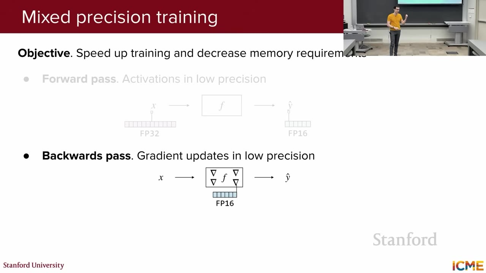
画像の読み解き：低精度の作業経路で前向き計算と逆伝播を速くしつつ、更新の蓄積先を高精度に保つ考え方が描かれている。すべてのテンソルを一律に同じ形式へ変えるのではなく、値の範囲と誤差への敏感さで使い分けることが要点である。
現代のAutomatic Mixed Precision（AMP、自動混合精度）は「すべてFP16」とせず、行列積は低精度、大きな総和、交差エントロピー、指数関数など不安定になりやすい演算はFP32へ残す。実装やBF16の利用時には、FP32基準重みの持ち方も一様ではないため、講義図は原理を示す簡略像である。
FP16では小さな勾配が表現範囲を下回って0へ潰れることがある。そこで損失スケーリング（loss scaling）では、損失を係数S倍して逆伝播し、得られた勾配を更新前にSで割り戻す。式で書けばL′=SL、g′=∂L′/∂θ=Sg、したがってg=g′/Sである。Lは元の損失、θはパラメータ、gは本来の勾配で、この操作は数学的な更新値を変えず、途中だけ表現しやすくする。
たとえば勾配10−8へS=1024を掛けると、逆伝播中は約1.024×10−5となり、FP16で0へ潰れにくくなる。大きくしすぎると逆にオーバーフローするため、動的スケーリングは非有限値を検出したら係数を下げる。BF16は指数範囲が広いため、FP16ほど損失スケーリングを必要としない場合が多い。
量子化と混合精度は併用できるが、目的は異なる。量子化は値を少数のコードへ圧縮し、混合精度は計算経路の数値形式を選ぶ。どちらもメモリと速度を改善できる一方、最終的には学習損失、下流評価、数値異常を測り、削減したビットが品質へ与える影響を確認する必要がある。
7. SFT：次token modelをhelpful assistantへ変える
この節では、Supervised Fine-Tuning（SFT、教師あり微調整）が、pretrained modelへ望ましいinstruction-response例を教師信号として与え、単なる文章の続きを予測するmodelを指示に応じるassistantへ変える仕組みを説明する。
Pretrained modelは「Can I put my teddy bear in the washer?」を質問として助言せず、training textに続きそうな材質説明などを生成し得る。Pretrainingの目的はassistant behaviorではなく、あくまでcontinuation予測だからである。
General assistant向けにinstruction-response pairを使うSFTをinstruction tuning（指示チューニング）と呼ぶ。多様な指示と模範回答を横断して学ぶことで、個別taskだけでなく、未見の指示でも「要求を読み取り、回答形式を合わせる」という共通behaviorを引き出す。
Teacher forcing（教師強制）では、training中の各時点でmodel自身の直前出力ではなく正解responseの直前tokenを入力し、次の正解tokenの確率を高める。誤りが連鎖せず全位置を並列に学べるためSFTを安定・高速化でき、講義のresponse-only設定ではpromptを条件として固定し、assistant responseのtokenだけをlossへ数える。
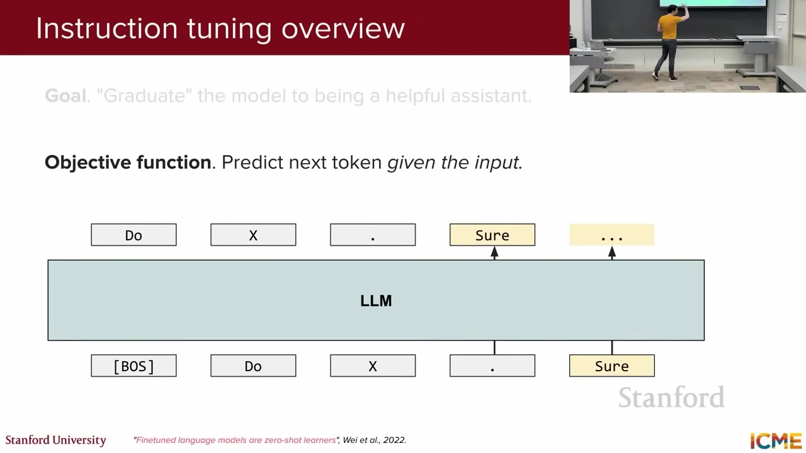
画像の読み解き：Modelはuser textをparrotするのではなく、そのinputを条件に望ましいoutput distributionを学ぶ。Causal LM自体は同じでも、どのtokenをlabelとして数えるかがpretrainingと異なる。
Hugging Face TRLではprompt-completion datasetはcompletion-only lossが既定だが、full-sequence lossにも変更できる。Chat形式ではassistant_only_loss=Trueでassistant messageだけを対象にする。講義の説明はresponse-only SFTを指す。
Instruction data mixture：どのようなassistantにするかを、模範例の組み合わせで教える
Pretrainingを終えたmodelは、言葉・知識・codeのパターンを学んでいるが、「ユーザーの依頼へどう答えるべきか」は明示的に学んでいない。SFTの目的は、新しい知識を大量に詰め込むことよりも、既に持つ能力を、指示に従った望ましい回答として出す方法を教えることである。その教師になるのが、ユーザーのinstructionと模範responseを組にしたtraining exampleである。
| 教えたい振る舞い | Instruction例 | 模範responseで示すこと |
|---|---|---|
| 指示理解・形式遵守 | 「次の文章を3項目で要約して」 | 要点を選び、指定された3項目の形式で簡潔に答える。 |
| 説明 | 「光合成を中学生向けに説明して」 | 対象読者に合わせた語彙、順序、具体例で説明する。 |
| Reasoning・数学 | 「この文章題を途中式付きで解いて」 | 結論だけでなく、問題を分解して一貫した手順を示す。 |
| Code | 「Pythonで重複を除く関数を書いて」 | 実行可能なcode、使い方、必要な注意を返す。 |
| Safety | 危険な行為を具体的に依頼するprompt | 危険な手順は拒否し、安全な代替案や一般情報へ誘導する。 |
| 不確実性の表現 | 根拠だけでは断定できない質問 | 「確認できない」「可能性がある」と根拠に応じて確信度を限定する。 |
Instruction data mixtureとは、これら異なる種類のexampleを1つのSFT datasetへ、意図した割合で混ぜることである。物語や詩だけに偏れば創作は上達しても事実質問やcodeが弱くなり、数学だけに偏れば一般会話が不自然になり得る。どのカテゴリを何件入れるかは、最終製品で重視する能力と振る舞いを決める設計そのものである。
言語・知識・codeの基礎能力"] --> B["多様なinstruction-response例"] B --> C1["説明・要約・創作"] B --> C2["数学・reasoning・code"] B --> C3["会話・format遵守"] B --> C4["Safety・不確実性"] C1 --> D["SFT"] C2 --> D C3 --> D C4 --> D D --> E["指示を読み取り
目的に合う形式で答えるassistant"]
SFTは基礎能力をゼロから作るのではなく、能力の呼び出し方と回答行動を模範例から整える。
目標はHelpful・Safe・Generalizable
- Helpful（役に立つ）：質問の意図を読み取り、直接的で実行可能な答えを返す。単に流暢な続きを生成するのではなく、依頼された作業を完了する。
- Safe / Harmless（安全）：危険な依頼では有害な具体手順を出さず、理由を簡潔に説明して安全な代替へ導く。何でも拒否するのではなく、riskに応じて境界を変える。
- Factual（事実に沿う）：流暢さだけでなく、検証可能な主張を信頼できる事実と一致させる。根拠が不十分な場合は断定せず、hedging（留保表現）として「可能性がある」「確認できない」と不確実性を示す。
- Generalizable（未見の指示へ応用できる）：training exampleの文面を暗記するのではなく、「要約する」「表で答える」「手順を示す」といった共通パターンを学び、新しい話題や言い回しにも適用する。
Instruction-response exampleをどう作るか
高品質な模範回答をすべて人間が書けば品質管理しやすいが、費用と時間がかかり、話題・言語・難度を広く覆いにくい。そこで現在は、人間が書いたseed instructionや仕様をもとに、より強いLLMへcandidate responseを生成させるsynthetic data（合成データ）も使う。
candidateを大量生成"] B --> C["自動filter
重複・形式・既知の誤りを除外"] C --> D["人間または別modelがreview"] D --> E["カテゴリ・難度・言語の比率を調整"] E --> F["SFT dataset"]
Synthetic dataは生成しただけでは教師dataにならず、filter・review・配分設計が必要になる。
合成データは量と多様性を安価に増やせる一方、teacher modelの誤情報、偏り、不自然な言い回しも複製する。誤った回答を正解としてSFTすると、その誤りをstudentへ直接教えてしまう。そのため、出典確認、重複除去（deduplication）、品質score、human review、カテゴリ別のsampling比率が重要になる。
PretrainingとSFTは役割が違う
| 観点 | Pretraining | SFT / instruction tuning |
|---|---|---|
| 役割 | 大量の文章から言語・知識・codeの基礎能力を作る。 | 基礎能力を、ユーザーの指示へ適切に応答する行動へ変える。 |
| 入力data | Web、書籍、code、多言語文書などの巨大corpus。 | 「instruction → 模範response」の組。人間作成とreview済みsynthetic dataを使う。 |
| 学習する例 | 「この文章の次には何が続くか」 | 「この依頼には、どの内容・形式・安全基準で答えるべきか」 |
| 規模 | 数千億〜数兆token規模になり得る。 | 数千〜数百万example程度。Pretrainingより小さいが、1件ごとの品質が強く効く。 |
| Loss | 通常、corpusの各位置で次token予測lossを計算する。 | この講義の設定ではpromptは条件として与え、模範response部分の予測lossを計算する。 |
| 失敗した場合 | 知識・言語能力・coverageが不足する。 | 能力があっても指示を無視する、形式を守らない、過剰拒否する、誤情報を自信満々に答える。 |
Pretrainingで「できること」を増やし、SFTで「頼まれたときに、どう振る舞うか」を教える。その後のpreference tuningでは、複数の一応正しい回答のうち、どちらがより役立つ・安全・自然かという人の好みを学ぶ。SFTはこのpost-training pipelineの最初の行動調整段階である。
講義slideはSFT例数を「GPT-3: 13 thousands」としBrown et al. (2020)を引用するが、original GPT-3はinstruction SFTを行っていない。約13k training promptsは、GPT-3をbaseにしたInstructGPTのSFT dataset（Ouyang et al., 2022）の数字である。Llama 3 paperはpost-trainingにmillions of human instructions and preference judgmentsを使ったと記す。
8. SFTの難所：data distribution・generalization・cost
前節では、instruction-response例を使ってassistantの振る舞いを教える流れを見た。しかし、SFT dataset上のlossが下がっただけでは、実際のユーザーに役立つassistantが完成したとはいえない。必要なのは、望ましい回答を定義してdataを作り、実運用に近いpromptで試し、失敗を分析してdataを直す反復である。この節では、その反復を難しくする5つの問題を因果順に説明する。
SFTは1回で終わる処理ではなく、data作成・学習・実運用評価を繰り返す工程である。
1. まず「良い回答」を定義し、正しい模範dataを作る必要がある
SFTは模範responseを正解として学ぶため、教師dataの誤りをそのままmodelへ教える。例えば医療質問へ流暢だが誤った回答を正解として入れると、modelはその誤情報を高い確信で再現しやすくなる。したがって、文章が読みやすいだけでなく、factuality（事実との一致）、指示遵守、安全性、対象読者に合う表現を同時にreviewしなければならない。
ただし、専門領域の事実確認にはdomain expertが必要で、safety判断には一貫したpolicyとreviewer教育が必要になる。高品質dataが高価なのは、文章を1件書く費用だけでなく、事実確認、複数人の合意、重複除去、カテゴリ管理まで含むためである。
2. Training promptと実運用promptの分布がずれる
Prompt distributionは、promptの話題、長さ、言語、書き方、前提知識、要求形式などがどの程度現れるかという分布である。training dataが「丁寧な1文の英語質問」ばかりでも、実運用では誤字を含む短文、日本語と英語の混在、長い会話履歴、曖昧な依頼、表やJSONを求めるpromptが来る。
| Trainingで多いprompt | Productionで来るprompt | 起こり得る失敗 |
|---|---|---|
Summarize the following article. | これ3行で。専門用語は残して → ... | 要約能力はあっても、言語・長さ・形式指定を同時に守れない。 |
| 単発の明確な質問 | 過去の会話を参照する「さっきの案を表にして」 | 会話履歴との対応や参照対象を誤る。 |
| 一般知識の質問 | 社内略語や特定製品を含むdomain固有質問 | 基礎能力はあっても、用語・回答方針・必要情報が不足する。 |
このずれをdistribution shiftと呼ぶ。対策はtraining exampleを無差別に増やすことではなく、実際のtrafficを個人情報に配慮して分類し、不足している言語・形式・domain・難度をdata mixtureへ追加することである。
3. Training例の暗記ではなく、未見promptへ汎化させる
Generalization（汎化）とは、trainingで見た文面をそのまま再現するのではなく、学んだ共通規則を新しい入力へ適用する能力である。「東京について3項目で説明して」という例を100通り言い換えて入れるだけでは、都市以外の話題や表形式の要求へ応用できないかもしれない。話題、task、難度、出力形式を横断する多様なexampleが必要になる。
同じpromptへ複数回問い合わせたとき、temperatureが0より大きければ異なるwordingの回答が出ることがある。これは候補tokenを確率的に選ぶsampling variabilityであり、未見のtaskを解けるgeneralizationを証明しない。Temperatureを上げるだけでは知識やtask coverageは増えず、誤りや不安定さも増え得る。汎化を改善するには、target domainとtask空間を覆うtraining dataと評価dataが必要である。
4. 「良いassistant」を1つのscoreでは測れない
回答品質には複数の軸がある。数学の正解率が高くても危険な依頼へ応じれば問題であり、安全に拒否しても無害な質問まで拒否すれば役に立たない。文章が自然でも事実が誤っている場合もある。したがってEvaluationでは、能力と振る舞いを分け、複数の指標・人手評価・失敗事例を組み合わせる。
| 評価軸 | 確認する問い | 評価例 |
|---|---|---|
| Instruction following | 指定された内容・長さ・形式を守ったか | 形式validator、rubric、人手比較 |
| Correctness / factuality | 答えや主張が正しいか | 正解付きbenchmark、unit test、出典確認 |
| Helpfulness | ユーザーの目的達成に十分具体的か | Pairwise human preference、task completion |
| Safety | 有害な支援を避けつつ、無害な依頼へ過剰拒否しないか | Safety test set、red teaming、拒否率分析 |
| Robustness | 言い換え・誤字・長文でも一貫するか | Prompt variation、adversarial test |
5. SFTはPretrainingより小さいが、反復には計算costがかかる
SFT dataはPretraining corpusよりはるかに小さいが、full fine-tuningではmodelの全parameterに対するgradientとoptimizer stateを保持するため、大規模modelでは依然として複数GPUが必要になる。さらに実務では、data mixtureやhyperparameterを変えて複数回学習し、各checkpointを広い評価suiteで比較するため、1回のtraining costだけでは終わらない。
そこで、まず小規模experimentでdata設計を確認する、LoRAなどparameter-efficient fine-tuningを使う、過去のcheckpointから再開する、評価で改善しないカテゴリを特定してdataを重点追加する、といった方法で反復costを抑える。重要なのは、computeを増やす前に、どの失敗を直すための追加学習かを明確にすることである。
低品質な合成dataを大量に加えると事実性が下がり、productionにないpromptへ偏るとdistribution shiftが広がり、単一benchmarkだけで選ぶと別の能力低下を見逃す。SFTの難しさは、data品質・coverage・汎化・評価・computeを同時に回す必要がある点にある。
9. Evaluation：benchmarkとChatbot Arenaの両方に盲点がある
SFT後には「前より良くなったか」を確認する必要がある。しかし、modelの良さには、知識問題へ正解する、数学を解く、codeを動かす、指示を守る、読みやすく答える、安全に振る舞うなど複数の側面がある。この節では、正解を自動採点できる能力を測るbenchmarkと、正解が一つに決まらない回答品質を人が比較するChatbot Arenaを順に説明する。
| 知りたいこと | 向いている評価 | 例 |
|---|---|---|
| 問題へ正解できるか | 正解付きbenchmark | 学問知識、科学推論、算数、codeのunit test |
| どちらの回答がより役立つか | 人による一対比較 | 説明の分かりやすさ、文章品質、会話としての自然さ |
| 事実・安全性・実運用要件を満たすか | 専用testと専門review | 出典確認、safety test、latency、cost |
Benchmarkと人手比較は競合する方法ではなく、異なる問いへ答える補完関係にある。まずそれぞれが何を測るかを理解し、その後に見落としやすい弱点を確認する。
Capability benchmark：同じ問題を解かせ、正解率で比較する
Benchmark（ベンチマーク）は、全modelへ同じtest問題を出し、あらかじめ決めた正解・unit test・採点規則でscoreを計算する評価である。条件を固定できるため、model AとB、または学習前後のversionを再現可能な形で比較しやすい。重要なのは、1つの総合scoreだけでなく、知識・数学・codeなど能力別に変化を見ることである。
知識 / 推論 / 数学 / code"]
Benchmarkは問題と採点条件を固定し、modelの特定能力を比較する。
代表的なbenchmarkは何を試しているか
| Benchmark | 問題の形式 | 何を確認したいか | scoreの読み方 |
|---|---|---|---|
| MMLU Massive Multitask Language Understanding | STEM、人文、社会科学など57分野の4択問題 | 幅広い学問知識と問題理解を、同じ選択式で比較する。 | 高くても会話品質やcode実行能力が高いとは限らない。 |
| ARC-Challenge AI2 Reasoning Challenge | 小中学校レベルの科学4択問題のうち難しいsubset | 単語の一致や単純検索だけでなく、科学知識を組み合わせて答えられるか。 | 科学推論の一側面であり、すべてのreasoningを代表しない。 |
| GSM8K Grade School Math 8K | 約8,500問の算数文章題 | 文章から数量関係を読み、複数stepの計算で最終答えを出せるか。 | 通常は最終答えを採点するため、途中説明の品質を完全には測らない。 |
| HumanEval | 164件のPython関数仕様からcodeを生成 | 生成codeがunit testを通り、実際に正しく動くか。 | 説明の読みやすさではなく、test case上の実行結果を測る。 |
SFT後にGSM8Kだけ上がりMMLUが下がったなら、「model全体が良くなった」とまとめず、数学形式への適応は進んだが幅広い知識問題で後退した可能性を調べる。複数benchmarkを使う目的は、総合順位を1つ作ることより、どの能力が改善・悪化したかを分解することにある。
Benchmarkの弱点1：test問題を学習時に見ていた可能性
Data contamination（data汚染）は、評価に使う問題や解答がtraining dataへ混入し、modelが推論ではなく記憶で答えられる状態を指す。例えば公開されているGSM8Kの問題文と解答がweb corpusに含まれていれば、scoreが本来の未見問題への能力より高く見える。対策には、training corpusとの重複検査、非公開test、modelのknowledge cutoff後に作った新しい問題などを使う。
Benchmarkの弱点2：問題そのものを見なくても、同じtaskを練習している
Exactなtest問題の漏洩がなくても、一方のmodelだけが「MMLU形式の4択問題」や「GSM8K形式の途中式付き算数」を大量にSFTしていれば有利になる。これは試験問題を盗み見た状態とは異なるが、試験対策をしたmodelと、形式を知らないmodelをそのまま比べることになる。Architectureの差だけを測りたいなら、両modelのtraining taskやpost-training dataの違いを確認する必要がある。
Dominguez-Olmedoらは、exactなtest問題を見せなくても、比較する全modelを同じtask-specific dataでfine-tuneすると、MMLU・GSM8Kの世代差や「突然現れた能力」に見えた差が大きく縮むと報告した。これはbenchmark scoreがarchitectureやmodel sizeだけでなく、どのtask形式をpost-trainingしたかにも左右されることを示す。
一次資料: Training on the Test Task Confounds Evaluation and Emergence
Chatbot Arena：正解が一つでない回答を、人が2つずつ比較する
説明文、相談、創作、会話のようなtaskでは、正しい回答が1つに決まらず、自動採点しにくい。そこでChatbot Arenaは、同じuser promptを匿名の2 modelへ送り、2つのresponseを並べて「左が良い・右が良い・引き分け」をuserに選んでもらう。
A勝ち / B勝ち / Tie を投票"] D --> E["多数のpairwise結果を集計"] E --> F["相対rating・leaderboard"]
Model名を隠すのは、ブランド名への先入観を減らし、回答内容を比較してもらうため。
このように2つずつ比べる方法をpairwise comparison（一対比較）と呼ぶ。「この回答は100点中何点か」を人ごとに採点するより、「AとBのどちらが良いか」の方が判断しやすい。多数の勝敗から、Bradley–Terry modelなどを使って「AがBへ勝つ確率」を説明する相対的な強さを推定し、ratingへ変換する。
実際のuserが入力したpromptに対し、説明の分かりやすさ、指示遵守、文章の自然さ、全体的なhelpfulnessを相対比較できる。一方、投票者が専門知識を持たなければ、事実の正しさより自信のある文章や長い回答を好む可能性がある。
Chatbot Arenaにも偏りがある
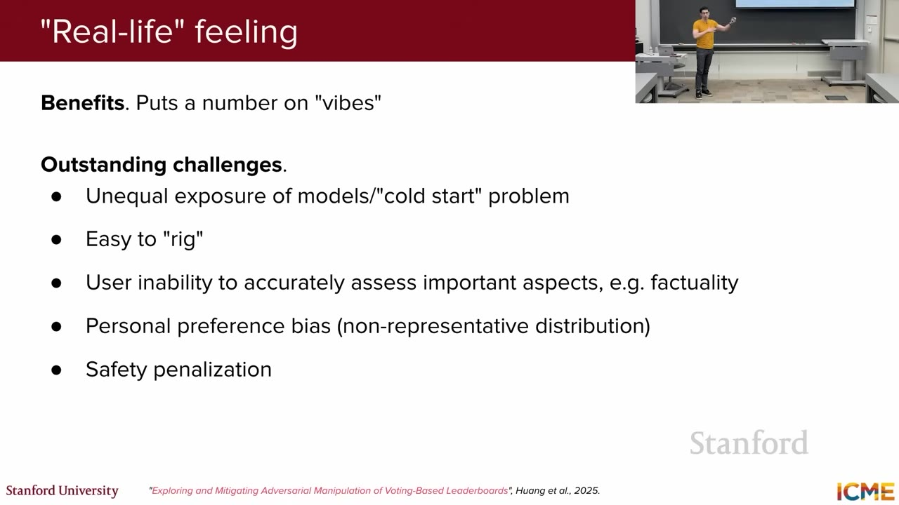
この表で言いたいこと：Chatbot Arenaの順位はmodel能力の絶対値ではなく、表示回数、投票者の知識や好み、投票の集計方法まで含んだ結果である。したがって順位だけで品質を断定せず、各行に示す偏りを理解し、正解付きtestや専門家評価で不足部分を補う必要がある。
| Arena評価のどこで起こるか | 問題 | Leaderboardへの影響 | 解釈・対策 |
|---|---|---|---|
| Modelを表示する段階 | Cold start / exposure差：新modelは対戦回数が少なく、modelごとに表示頻度も異なる。 | 少数の偶然な勝敗でratingが大きく動き、信頼区間が広くなる。人気modelと十分に対戦していない場合もある。 | 投票数、対戦相手、信頼区間を確認し、追加voteが集まるまで順位を暫定値として扱う。 |
| Userが回答を判断する段階 | 専門的factuality：投票者が医療・法律・高度な数学などの内容を検証できないことがある。 | 正しいが慎重な回答より、読みやすく自信のある誤答が選ばれ、事実性の低いmodelが有利になり得る。 | 専門家評価、正解付きtest、出典検証を別に実施し、Arena voteをfactuality scoreとして使わない。 |
| Userが回答を判断する段階 | Safetyへのpenalty：危険な依頼への適切なrefusalが「答えなかった」と見なされる。 | 安全だが拒否するmodelより、危険でも具体的に答えるmodelがvoteを得る可能性がある。 | 有害promptは専用safety testで評価し、過剰拒否と危険な応答を別々に測る。 |
| 投票者を集める段階 | 投票者の偏り：Arena利用者の言語・関心・verbosity・emojiなどの好みが、製品の全userと一致しない。 | 特定のstyleや話題に強いmodelが上位になっても、別の国・業務・利用者層では同じ選好にならない。 | 対象userを代表する独自評価を追加し、promptカテゴリ・言語別の結果も確認する。 |
| 投票を集計する段階 | 戦略的投票：組織的なvote、bot、回答文からのmodel識別により、特定modelを意図的に勝たせようとする。 | 自然なuser preferenceではないvoteが増えると、相対ratingと順位が人工的に動く。 | Login、rate limit、bot検知、異常vote除外、model識別を難しくする運用で影響を抑える。 |
つまり、この表はChatbot Arenaの「回答を2つ比較する」という中心ideaの欠陥を列挙したものではない。投票型leaderboardが、表示機会・投票者・prompt・集計方法に依存する観測値であることを示している。順位だけでなく、投票数、信頼区間、カテゴリ別成績を確認し、正解付きbenchmarkや専門評価と組み合わせて読む必要がある。
Huangらはresponseからtarget modelを95%超で識別し、約1,000のstrategic votesでもrankingを動かせるsimulationを示した。Rate limit、login、bot detection、reputationなどでattack costを上げられるが、human voteも無条件のground truthではない。
一次資料: Exploring and Mitigating Adversarial Manipulation of Voting-Based Leaderboards
結論：新しいmodelをリリースできるか、段階ごとに確認する
ここまで見たように、1つの評価だけではmodelの品質を判断できない。実務では、SFTした候補modelをすぐ公開するのではなく、基礎能力が壊れていないか→回答が好まれるか→専門領域で正しいか→安全か→運用条件を満たすかという順でrelease gateを通す。各評価は、前の評価では分からない別のriskを確認する。
異なる評価を足し算して1 scoreにするのではなく、用途に必要な条件を順番に満たす。
| 確認段階 | 具体的な問い | 主な評価方法 | 不合格なら何を疑うか |
|---|---|---|---|
| 1. 基礎能力の回帰test | SFTによって知識・数学・code能力が以前より悪化していないか。 | MMLU、GSM8K、HumanEvalなどを、baseまたは前versionと同条件で比較する。 | Data mixtureの偏り、学習率、過学習、catastrophic forgetting。 |
| 2. 一般的な回答品質 | 指示を守り、分かりやすく、役に立つ回答になったか。 | 対象promptで旧modelと新modelを匿名表示し、human / judgeがpairwise比較する。 | 模範responseのstyle、instruction coverage、過剰な長文化や拒否。 |
| 3. Domain correctness | 医療・法律・社内業務など対象領域で、内容が正しく要件を満たすか。 | Domain expert review、正解付き社内test、出典照合、実task completion。 | 専門data不足、誤ったsynthetic data、外部知識・tool連携不足。 |
| 4. Safety / policy | 有害な依頼を適切に拒否し、無害な依頼を過剰拒否しないか。 | Safety test set、red teaming、カテゴリ別の違反率・過剰拒否率。 | Safety dataの不足・偏り、policy定義、helpfulnessとのtrade-off。 |
| 5. Serving要件 | 必要な同時利用者数で、許容latency・memory・costを満たすか。 | 実hardware上のload test、token/s、初回応答時間、GPU memory、1 request当たりcost。 | Model size、context長、batching、quantization、serving architecture。 |
まず公開benchmarkで一般能力の大幅な後退がないことを確認する。次に実際の社内質問を使い、旧versionより回答が分かりやすいかを匿名比較する。ただし人手で読みやすいだけでは不十分なので、社内規程の正確さは担当部署が検証し、機密情報を漏らさないかをsecurity testで確認する。最後に、想定同時接続数で応答時間とcostを測り、条件を満たした範囲へ段階的にreleaseする。
公開benchmarkの順位やArena ratingは、候補modelを理解する参考情報にはなるが、release判定そのものではない。最終的な基準は、対象userのtaskを、正しく、安全に、必要な速度と費用で完了できることである。その基準を具体的なtestへ分解し、model更新のたびに同じsuiteを実行する。
10. Alignmentとmid-training
前の節までで、Pretrainingにより基礎能力を作り、SFTでinstructionに答える振る舞いを教え、その結果を複数の評価で確認する流れを見た。ここでは学習pipelineを一度並べ直し、能力を用途へ寄せるmid-trainingと、回答の振る舞いを人の期待へ寄せるalignmentがどこに入り、何を解決するのかを分けて説明する。
Mid-trainingは講義の終盤で紹介されるが、実際のpipelineでは通常、Pretrainingの後、SFTの前に置く。以下では概念上の工程順に並べる。
広い言語・知識・code能力"] --> B["2. Optional Mid-training
Domain・長文・特定能力を強化"] B --> C["3. SFT
Instruction → 模範responseを学ぶ"] C --> D["4. Preference tuning
複数の回答から好まれる方を学ぶ"] D --> E["5. Evaluation・Release
能力・品質・安全・costを確認"]
各段階は別の問題を解く。前段階で不足した能力を、後段階のbehavior調整だけで埋めるとは限らない。
まず段階ごとの役割を分ける
| 段階 | 主に解く問題 | Dataの形 | 学習後に期待する変化 |
|---|---|---|---|
| Pretraining | 言語・世界知識・codeなど基礎能力がない | 大量の通常text | 文章の続きを予測し、広い概念とpatternを学ぶ。 |
| Mid-training | 対象domain・長文・数学など、必要な能力が基盤modelに不足 | 対象用途に近い大量text。通常はnext-token学習を継続 | 専門語彙・文書構造・context長・特定能力へmodelを寄せる。 |
| SFT | 能力はあるが、user instructionへ適切な形式で答えない | Instructionと模範responseのpair | 依頼を読み、望ましい回答形式・手順・拒否例を再現する。 |
| Preference tuning | 複数の妥当な回答のうち、どれがより良いかをSFTだけでは決めにくい | 同一promptへのchosen / rejected response、または順位 | より役立つ・安全・自然と評価される回答の確率を上げる。 |
Mid-training：SFTの前に、用途に必要な「能力」を補う
Mid-training（中間学習）は、広いdataでPretrainingしたbase modelへ、最終用途に近いdataを追加し、通常は同じnext-token predictionを続ける段階である。目的は回答styleを教えることではなく、SFTで呼び出したい基礎能力を先にmodel内部へ作ることにある。
| 用途上の不足 | Mid-trainingで使うdata例 | 狙う変化 |
|---|---|---|
| 法律文書の語彙・構造を理解しにくい | 契約書、法令、判例、解説文 | 法律用語と長い条項間の関係を表現しやすくする。 |
| 長いcontextを十分に使えない | 長文documentを長いsequenceとして継続学習 | Position設定やattentionを長い入力へ適応させる。 |
| 数学・code能力が不足 | 数式、証明、code repository、技術文書 | 対象領域のpattern・syntax・問題構造をweightへ取り込む。 |
例えば法律assistantを作るとき、base modelが法律用語や契約書構造を十分理解していなければ、少数のinstruction-responseだけで「契約書を正確に分析する能力」まで新しく作るのは難しい。先に法律corpusでmid-trainingし、その後SFTで「条項を要約する」「riskを表で示す」といった回答行動を教える方が、能力と振る舞いを分担できる。
Domain-adaptive continued pretrainingは特定domainのcorpusでnext-token学習を続けること、long-context adaptationは長いsequenceへ対応させること、capability-specific trainingは数学・codeなど特定能力のdataを増やすことを指す。境界や名称は組織・文献によって異なるが、SFT前にbase capabilityを用途へ寄せる点が共通する。
Alignment：modelの出力行動を、人の意図や方針へ近づける
Alignmentは、modelの出力をuserの意図、human preference、safety policyなどへ近づけるpost-training全体を指す言葉として使われる。この講義では主にSFT + preference tuningをalignmentとして扱う。ただし、評価・red teaming・system promptなどまで含める場合もあり、用語の範囲は文献や組織で異なる。
SFTだけでは「唯一の模範回答」を用意しにくい
SFTは1つのinstructionへ模範responseを与え、その文面の確率を上げる。しかし実際には、同じ質問へ複数の正しい回答があり、その中でも「簡潔」「根拠が明確」「安全」「userの意図に合う」といった好みがある。すべてのpromptへ唯一の完璧な文章を書くより、候補を比較して良い方を選ぶ方がannotationしやすい場合がある。
| Prompt | Chosen（より好ましい） | Rejected（より好ましくない） | 学ばせたい差 |
|---|---|---|---|
| 「このエラーの直し方を教えて」 | 原因を説明し、安全な修正手順と確認方法を示す。 | 説明なしに危険なcommandだけを提示する。 | 具体性、正確性、安全性。 |
| 「この文章を短く要約して」 | 主要論点を3文で保持する。 | 長く言い換えるだけ、または重要点を落とす。 | 指示遵守と情報選択。 |
Preference tuning（選好チューニング）は、同じpromptに対する候補responseを人間またはjudge modelが比較し、chosenの確率をrejectedより高くする学習である。これにより、一意の正解文を決めずに、helpfulness、文章style、safetyなどの相対的な好みを反映できる。
Preferenceを学ぶ代表的な2方向
Reward model + RL
Preference pairから「このresponseはどれだけ好ましいか」をscore化するreward modelを学び、そのscoreが上がるようLLMを強化学習する。PPOなどが代表例で、Lecture 5で詳しく扱う。
Direct preference optimization
独立したreward modelとRL loopを明示的に作らず、chosenをrejectedより選びやすくなるようpolicyを直接最適化する。DPOなどが代表例である。
どの段階へ戻るべきかは、失敗の種類で決める
| 観察した失敗 | 主に見直す段階 | 理由 |
|---|---|---|
| 専門用語やdomain知識を理解できない | Pretraining / Mid-training | 回答style以前に、必要な表現・知識・能力が不足している。 |
| 知識はあるが、形式指定を無視する | SFT | Instructionと望ましいresponseの対応を教える必要がある。 |
| 複数の正しい回答から、冗長・不親切な方を選ぶ | Preference tuning | 一意の正解ではなく、回答間の相対的な好みを学ぶ問題である。 |
| 危険な依頼へ応じる、または無害な依頼も拒否する | SFT + Preference tuning + Safety evaluation | Policy例、相対選好、専用評価を組み合わせて境界を調整する。 |
Preference tuningは「知らない法律知識」を大量に追加する工程ではなく、候補回答のどちらを選ぶかを調整する工程である。SFTも少数の模範例から新しいdomain全体を学ぶには限界がある。失敗が能力不足なのか、instruction following不足なのか、選好・safetyの問題なのかを評価で切り分け、適切な段階へ戻る必要がある。
11. LoRA：大きなmodelを固定し、小さな差分だけを学ぶ
前節までのSFTをfull fine-tuningで行うと、modelの全parameterを更新するため、全weight分のgradientとoptimizer stateが必要になる。数十億parameterのmodelでは、この学習memoryとtaskごとのmodel保存costが大きい。LoRA（Low-Rank Adaptation）は、この問題に対し、元のmodelを変更せず固定し、各taskに必要な小さな追加parameterだけを学習するparameter-efficient fine-tuning手法である。
LoRAは、大きなbase model全体を書き換える代わりに、「このtask向けにweightをどの方向へ少し変えるか」を表す小さなpatchを追加して学ぶ。Base modelは共通のまま、要約用・分類用・社内QA用などのpatchだけを交換できる。
Full fine-tuningとの違い
全gradient・optimizer stateが必要"] B1 --> C2["Taskごとにmodel全体を保存"] B2 --> D1["Base weightはfreeze
小さなA・B行列だけ更新"] B2 --> D2["TaskごとにLoRA adapterだけ保存"]
LoRAでもforwardではbase model全体を使うが、学習対象は小さなadapterに限定する。
| 観点 | Full fine-tuning | LoRA |
|---|---|---|
| Base weight | 更新する | Freezeして更新しない |
| 学習するparameter | 原則としてmodel全体 | 追加した小さな低rank行列A・B |
| Gradient / optimizer state | 全trainable weight分が必要 | 主にA・Bの分だけ必要 |
| Taskごとの保存 | 更新後のmodel全体 | 小さなLoRA adapter |
| 表現の自由度 | 全weightを自由に変更できる | 低rank差分で表せる範囲へ制限される |
LoRAは何を追加するのか
TransformerのLinear層には、大きなweight matrix W0 がある。Full fine-tuningではこの行列自体を変更するが、LoRAでは W0 をfreezeし、入力をいったん小さい次元へ圧縮する行列 A と、元の次元へ戻す行列 B を横に追加する。出力は、元のmodelの計算 W0x と、LoRA patchの計算 BAx を足したものになる。
W′ = W0 + ΔW, ΔW = (α/r)BA
W₀は固定。学習するのは小さなAとBだけ。α/rはpatchの強さを調整するscale。
Training stepで何が起こるか
LoRAの学習でも、入力はbase model全体を通る。違いは、backward後に更新する対象をA・Bだけへ限定する点である。次の図では、入力から予測を作り、Lossを計算し、A・Bだけを更新する1 training stepを上から下へ追う。
固定weight W0で W0x を計算
計算には使うが値は変えない"] SPLIT --> A["LoRA経路 1
Aで小さいrank rへ圧縮"] A --> B["LoRA経路 2
Bで元の次元へ戻して BAx を作る"] BASE --> SUM["Base出力 W0x と
LoRA差分 BAx を足す"] B --> SUM SUM --> PRED["合計出力 h から予測を作る"] PRED --> LOSS["予測と正解を比較して
Lossを計算"] LOSS --> BACK{"Backwardで
どのparameterを更新するか"} BACK --> FROZEN["W0
Freeze済み
更新しない"] BACK --> GRAD["A・B
Gradientを計算"] GRAD --> UPDATE["Optimizerが
A・Bだけを更新"] UPDATE --> NEXT["次のmini-batchで
同じ流れを繰り返す"] FROZEN --> NEXT NEXT --> SAVE["学習終了後
A・BをLoRA adapterとして保存"]
LoRAのtraining flow。Base weightは予測計算へ使うが、更新するのはA・Bだけ。
| 段階 | Base weight W₀ | LoRA A・B |
|---|---|---|
| Forward | 入力からbase出力を計算するために使う | Task-specificな差分出力を計算するために使う |
| Backward | Freezeされているため、更新用gradientを保持しない | Lossからgradientを計算する |
| Optimizer update | 変更しない | 新しい値へ更新する |
| Task checkpoint | 共通baseとして別に保持 | Taskごとのadapterとして保存する |
W₀をfreezeしても、Forward計算から取り除くわけではない。Pretrainingで得た能力を使うため毎回 W₀x は計算するが、Optimizerが値を書き換えないよう更新対象から外す。LoRAはbase modelを置き換えるのではなく、その出力へ小さなtask差分を加える。
なぜ2つの小さな行列で表せるのか
Fine-tuningで必要なweight変化 ΔW は、大きな行列の全方向を独立に動かさなくても、少数の重要な方向だけで近似できる場合がある、という経験的な考え方をlow-rank hypothesis（低rank仮説）と呼ぶ。LoRAは ΔW を B × A の積へ制限し、その中間次元 r を小さくすることでparameter数を減らす。
巨大な4096×4096行列を自由に書き換える代わりに、「まず4096次元から8個の重要な特徴へ圧縮し、その8特徴から4096次元の変更量を作る」と考える。この中間の8がrank rである。変更方向を8本に絞るため自由度は下がるが、学習する数は大幅に減る。
Parameter数はどれだけ減るか
| 対象 | 形状 | 学習parameter数 |
|---|---|---|
Full weight W | 4096 × 4096 | 16,777,216 |
| LoRA A（rank 8） | 8 × 4096 | 32,768 |
| LoRA B（rank 8） | 4096 × 8 | 32,768 |
| LoRA合計 | A + B | 65,536（full weightの約0.39%） |
これは1つの4096×4096行列にrank 8のLoRAを付けた単純例である。実際のmodel全体で何%を学習するかは、LoRAを付けるlayer数・target module・rankによって変わる。それでも、全weight分のgradientとoptimizer stateを持つfull fine-tuningより、trainable memoryを大幅に減らせる。
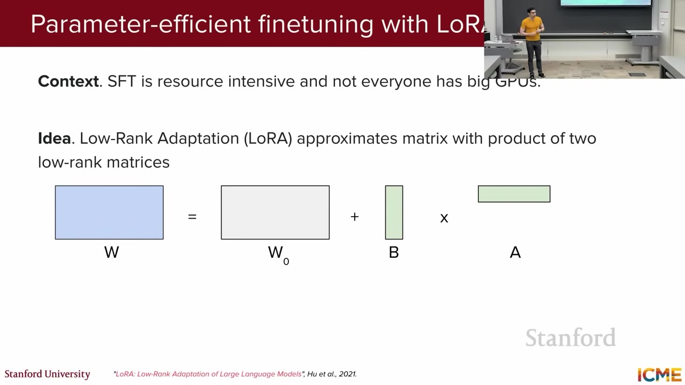
rのB×Aへ分けるLoRA。1:38:20画像の読み解き：大きなbase weight W0 は全taskで共通して固定し、taskごとに異なる小さなA・Bだけを学習する。例えば同じbase modelに、要約adapter、sentiment adapter、社内QA adapterを付け替えられる。
推論時はどう使うか
Adapterを別経路のまま使う
Base modelを1つmemoryへ置き、requestやtaskに応じてLoRA adapterを切り替える。複数taskを少ないstorageで運用しやすいが、base経路に加えてLoRA経路も計算する。
Base weightへmergeする
学習後にW′ = W₀ + BAを計算し、1つのweightとして保存する。通常のLinear層と同じ形で推論できるが、taskごとにmerge済みmodelを持つ。
LoRAが減らすもの・減らさないもの
| 減らせるもの | 残るもの |
|---|---|
| Trainable parameter数 | Base modelのweight自体を保存するmemory |
| A・B以外のgradientとoptimizer state | Forward / backwardでbase modelを通る計算 |
| Taskごとのcheckpoint容量 | Activation memory、batch・sequence length由来のmemory |
Rankが小さすぎる、target moduleが少ない、training dataが非常に大きい、base modelから大幅な変更が必要、といった場合はadapterの表現capacityが不足し得る。また、base weightを量子化しない通常LoRAでは、base modelを置くmemoryは残る。次節では、どのlayerへLoRAを付け、rank・learning rate・batch sizeをどう選ぶかを扱う。
12. LoRAをどこへ、どれくらい学習させるか
前節では、base modelをfreezeし、小さなA・B行列だけを学ぶLoRAの基本を説明した。しかし、LoRAを追加するだけでは設定は決まらない。実際には、どのweightへ付けるか、rankをいくつにするか、どの速さで更新するか、1 stepで何件使うかを選ぶ必要がある。この節では、それぞれが何を変え、設定が小さすぎる・大きすぎると何が起こるかを整理する。
| 設定 | 決める問い | 主に変わるもの |
|---|---|---|
| Target modules | Transformer内のどのLinear weightへLoRAを付けるか | 変更できる機能の範囲とtrainable parameter数 |
Rank r | 各LoRA patchに何本の独立な変更方向を許すか | Adapterの表現capacityとmemory |
| Learning rate | A・Bを1 stepでどれくらい動かすか | 収束速度と学習安定性 |
| Batch size | 何exampleのgradientをまとめて1回更新するか | Gradientのばらつき、memory、generalization |
1. Target modules：LoRAを付ける場所
Transformerには多数のLinear weightがある。AttentionにはQuery・Key・Value・Output projectionがあり、各tokenを個別に変換するMLP / feed-forward blockにはup・gate・down projectionなどがある。Target modulesは、このうちどのweightへA・Bを追加するかを指定する設定である。
LoRAをAttentionだけに置くか、MLPを含む全Linear層へ置くかで変更可能な範囲が変わる。
Original LoRA paperは主にAttention projectionを対象に実験したため、「LoRAはQ/Vだけへ付ける」という設定が広まった。しかし後の実験では、MLPへLoRAを付けることが重要な場合があり、Attention-onlyよりMLP-only、またはAttention + MLPの方が高性能になる例が報告された。これはtask適応に必要なweight変化がAttentionだけに存在するとは限らないためである。
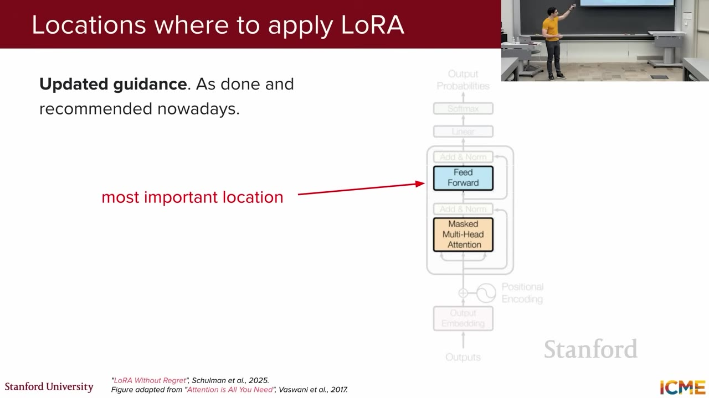
画像の読み解き：スライドは、Q/VなどAttention projectionだけでなく、MLP / feed-forward blockも重要なtargetだと示している。ただし「すべてのmodelで必ず全Linear層が最適」という意味ではなく、data・rank・計算予算をそろえて比較する必要がある。
2. Rank：LoRA patchの表現capacity
Rank rは、weight差分が使える独立方向の数である。小さいrankはparameterとmemoryを減らせるが、複雑なtask変化を表現しきれない可能性がある。大きいrankはcapacityを増やすが、trainable parameter、optimizer state、checkpointが増え、LoRAの省memory効果が小さくなる。
| Rankの状態 | 起こり得ること | 確認方法 |
|---|---|---|
| 小さすぎる | Training lossも下がり切らず、複雑なinstructionや大量dataをadapterが表現できない。 | Rankを上げたときvalidation性能が継続的に改善するかを見る。 |
| 十分 | 必要なtask差分を表しつつ、FullFTより少ないparameterで近い性能を得られる。 | 複数rankで品質・memory・速度の曲線を比較する。 |
| 必要以上に大きい | Memoryと学習costが増え、少量dataでは過学習の余地も増える。 | Rank増加でvalidationが改善せず、trainだけ改善していないかを見る。 |
3. Learning rate：FullFTの設定をそのまま使わない
LoRAではbase weightが固定され、A・Bという積のparameterizationだけを更新するため、FullFTとはgradientの流れと最適なstep幅が異なる。小さすぎるlearning rateではadapterが十分変化せず、大きすぎるとlossが不安定になり、base modelの出力へ過大な差分を加える。
講義が参照する実験では、high-rank LoRAの最適learning rateがFullFTのおよそ10倍になった条件がある。ただしこれは普遍値ではない。Base model、optimizer、rank、batch size、data量によって変わるため、FullFT設定をコピーせず、複数候補をvalidationで比較するという意味で読む。
4. Batch size：大きければ常に安定・高性能ではない
Batch sizeを大きくすると、多数exampleのgradientを平均するため1 stepの方向は滑らかになり、GPUを効率利用しやすい。一方でupdate回数が減り、gradientの多様性が小さくなるため、SFTのgeneralizationが悪化する場合もある。参照実験では、LoRAがFullFTよりlarge batchの悪影響を受けた設定があり、rankを増やしても完全には解消しなかった。
実務での選び方
- 評価dataを先に作る：対象task、形式遵守、factualityなどを測れるvalidation setを用意する。
- Target modulesを比較する：Attention-only、MLP-only、all-linearなどを、近いtrainable parameter数で比較する。
- Rankを段階的に増やす：小さいrankから始め、validation改善が止まる位置とmemoryを確認する。
- Learning rateを再探索する：FullFTの値を固定せず、LoRA向け候補をlog scaleで比較する。
- Batch sizeとgradient accumulationを調整する：Memoryだけでなく、update回数とvalidation性能を見る。
| 参照実験の観察 | 実務上の読み方 |
|---|---|
| MLPを含むtargetがAttention-onlyを上回った。 | Task updateをAttentionだけへ限定せず、MLPを含む候補を比較する。 |
| Data量がadapter capacityを超えるとFullFTよりlearning efficiencyが落ちた。 | 小rankを固定せず、data規模に応じてrankまたはFullFTを検討する。 |
| High-rank LoRAの最適LRがFullFTより高かった。 | LoRA専用のlearning rate searchを行う。10倍を既定値にしない。 |
| 一部SFTでlarge batchのpenaltyが大きかった。 | Throughputだけでbatchを決めず、validationとupdate回数を確認する。 |
これらはTulu3・OpenThoughts3など特定のmodel・dataset・training setupで得られたempirical resultである。Small-to-medium規模のpost-training dataではLoRAがFullFTへ近い一方、adapter capacityを超える非常に大きなdataではunderperformする場合がある。最終判断は自分のmodel、data、評価、memory予算で行う。
13. QLoRA：base modelも4-bit化して、LoRA学習をさらに省memory化する
通常のLoRAはgradientとoptimizer stateを大幅に減らすが、freezeしたbase weight自体はGPU memoryへ置く必要がある。例えば65B parameterを16-bitで保存するだけでも理論上約130GBとなり、48GB GPU 1台には収まらない。QLoRA（Quantized Low-Rank Adaptation）は、LoRAのbase weightを4-bitへ量子化して保存し、学習するLoRA adapterはBF16などの高いprecisionへ保つことで、この残ったmemory bottleneckを解く。
Base weight: FP16/BF16
LoRA A・B: trainable"] --> B["QLoRA"] B --> C["Base weight: 4-bit NF4
freezeして保存"] B --> D["計算時だけBF16等へ
dequantize"] B --> E["LoRA A・B: BF16等で学習"] D --> F["Base output + LoRA output"] E --> F F --> G["GradientはA・Bへ
4-bit baseは更新しない"]
QLoRAは「4-bit base modelを直接更新する」のではなく、4-bitで保存したbaseを固定し、高精度LoRAだけを学習する。
QLoRAの1 training step
- Pretrained base weightをNF4の4-bit codeでGPU memoryへ保存する。
- Forwardで対象layerを計算するとき、そのblockのweightをBF16などのcompute dtypeへ一時的にdequantizeする。
- Dequantizeしたbase経路と、trainableなLoRA A・B経路の出力を足す。
- Backwardではbase weightをfreezeしたまま、gradientをLoRA A・Bへ流す。
- Optimizerは高precisionのLoRA parameterだけを更新する。
| 構成要素 | 保存形式 | 学習で更新するか | 役割 |
|---|---|---|---|
| Base weight | 4-bit NF4 | 更新しない | Pretrainingで得た大部分の知識・能力を保持する。 |
| 計算時のbase block | BF16などへ一時dequantize | 更新しない | GPUの通常matrix演算へ渡す。 |
| LoRA A・B | BF16など | 更新する | Task-specificなweight差分を学ぶ。 |
| LoRA optimizer state | 通常は高precision | 更新する | A・Bの学習を安定させる。 |
なぜ通常のINT4ではなくNF4を使うのか
NF4（4-bit NormalFloat）は、pretrained weightの多くが0付近に集中し、正規分布に近い形を持つという観察に合わせた4-bit codebookである。16個の代表値を等間隔に置くのではなく、weightが多い0付近には細かく、少ないtailには粗く配置する。限られた16 codeを実際のweight分布へ合わせ、頻出領域の丸め誤差を減らすことが目的である。
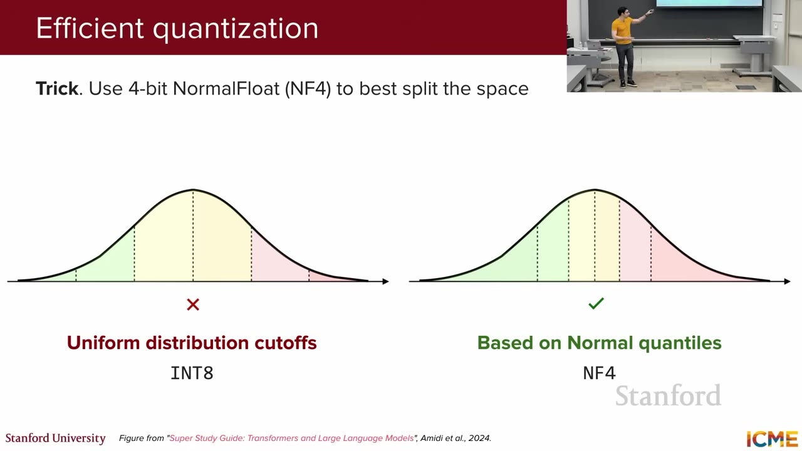
画像の読み解き：Weightが集中する0付近を細かく、tailを粗く表す。Fixed-width bucketでは頻出領域の誤差が大きくなりやすいが、quantile基準は有限codeを分布へ合わせる。
Double quantization：scale自体も圧縮する
Block-wise quantizationでは、weight codeに加えて各blockのscaleを保存する。Modelが巨大になるとscale metadataも多数必要になる。Double quantization（二重量子化）は、このscale群をさらに低bit codeへ量子化し、metadataまで圧縮する。QLoRA paperは平均約0.37 bit / parameterの追加saving、65B modelで約3GBの削減と報告した。
Paged optimizer：一時的なmemory spikeをCPU側へ逃がす
長いsequenceや大きいmini-batchでは、通常時は収まっていても一時的なactivation増加でGPU memoryを超えることがある。Paged optimizerはNVIDIA unified memoryを使い、必要性の低いoptimizer stateのpageをCPU memoryへ退避し、必要時に戻す。常にCPUへ置く方式ではなく、突発的なOOMを避けるためのoverflow経路である。転送が発生すれば遅くなるため、無制限にmemoryを増やす技術ではない。
論文のmemory数字をどう読むか
>780GB → <48GBは、weight形式だけを16-bitから4-bitへした単純な4倍比較ではない。左側のFullFTは全weight、gradient、optimizer stateなどを持ち、右側のQLoRAは4-bit frozen base、少数のLoRA gradient / optimizer state、double quantization、paged optimizerを組み合わせる。したがって約16倍という差はQLoRA system全体の効果である。
Base modelをFP16 / BF16でGPUへ置けるなら、通常LoRAはdequantization誤差がなく構成も単純である。Base weightだけでGPU memoryを超える場合は、QLoRAで保存量を下げる価値が大きい。選択は「QLoRAの方が常に高性能」ではなく、base modelを置けるmemory、許容するquantization error、training速度で決める。
QLoRAが減らすもの・残るcost
| 改善するもの | 残る制約 |
|---|---|
| Frozen base weightのGPU memory | Forward / backwardでbase model全層を計算するcost |
| FullFTのgradient・optimizer state | LoRA A・B、activation、temporary bufferのmemory |
| Single-GPUで扱えるmodel size | 4-bit量子化による丸め誤差とdequantization overhead |
必要memoryはsequence length、batch size、gradient checkpointing、LoRA target、rank、optimizer実装、runtime bufferで変わる。Paperの数字は特定構成での実証であり、自分のsetupではmemory profileとvalidation qualityを測る必要がある。
14. 講義内Q&A総覧
この節では、講義中に出たpretrainingの再利用、分散gradient、FlashAttention、数値精度、SFT、LoRA rankに関する質問を、対応する技術判断が分かる形で一覧化する。
| 質問 | 講義の回答・要点 |
|---|---|
| Model version間でpretrainingをtransferするのか。 | Closed modelはrecipeを公開しないため一般回答はできない。いずれにせよpretrainingは高価。 |
| Scaling lawでarchitecture差は重要でないのか。 | Paperのtested familyではparameter・tokenが主要因。ただしlawを別architectureへ無条件に外挿しない。 |
| Data parallel GPU間のgradient updateは。 | 各mini-batchのgradientを通信でaggregateし、平均に相当するupdateを全replicaへ適用する。 |
| FlashAttentionはrow全体をSRAMへ入れるのか。 | 図は説明用。実際はSRAM sizeに合わせQ/K/Vを2次元blockへ分けられる。 |
| Online softmaxの補正係数は近似か。 | Running statisticsを逐次計算するexact method。詳細式はpaper参照。 |
| Mixed precisionは全layerへ同じように適用するか。 | Variationがあり、重要な部分を高precisionへ残す。実装・hardware依存。 |
| Quantizationのrangeをどう扱うか。 | 講義はzero-point・absmax quantizationをpointerとして挙げ、QLoRAのNF4へつなぐ。 |
| SFTでinputにもlossを置くか。 | 講義のinstruction settingでは置かず、response開始からlossを計算する。 |
| 同じSFT exampleを入れると同じoutputか。 | Non-zero temperatureなら同じwordingとは限らない。類似flavorはあり得る。 |
| LoRA rankはgrid searchするか。 | 可能。既知のpopular valueから始めてもよく、講義はr=4を例示。Dataset capacityとの対応を確認する。 |
15. 難しい用語の補足
この節では、本文で仕組みと用途を説明した専門語を短い定義へ引き直し、memory・分散・量子化・評価の用語を参照しやすくまとめる。
| 用語 | この講義での意味 |
|---|---|
| Base / pretrained model | Large corpusで次token予測を終えたが、assistant behaviorへ十分alignしていないmodel。 |
| Activation | Layerがforward時に出す中間tensor。Backwardでgradientを計算するため保持または再計算する。 |
| Optimizer state | Adamの1次・2次momentなど、parameter updateを安定化する補助state。 |
| HBM / SRAM | GPUの大容量off-chip memory / 小容量高速on-chip memory。FlashAttentionは両者間のI/Oを最適化する。 |
| All-reduce | 複数rankのgradientをsumし、結果を全rankへ配るcollective communication。 |
| Sharding | Tensorやstateをsliceへ分け、deviceごとに別sliceを持つこと。Replicationの反対。 |
| Quantization scale / zero-point | Integer codeと実数値を対応させる倍率 / zeroのcode位置。Range・誤差を決める。 |
| Low rank | Matrixの独立方向が少ないこと。LoRAではtask updateをrank rのsubspaceへ制限する。 |
| Out-of-distribution | Training prompt/dataとdeployment inputの分布がずれた状態。Generalization failureの一因。 |
| Data contamination | Test itemまたは非常に近いdataがtrainingへ混入し、benchmarkが実力以上に見えること。 |
16. まとめ：各手法はどのbottleneckを解くか
この節では、各手法が解消する学習上のbottleneck、得られる利点、代わりに生じるtrade-offを一つの対応表へ統合する。
| 課題 | 手法 | 得るもの | 新しいtrade-off |
|---|---|---|---|
| Taskごとにゼロから学習 | Pretraining + transfer learning | 共通知識を再利用。 | 巨大な初期cost、cutoff、memorization。 |
| 固定computeの配分 | Scaling / Chinchilla law | Parameterとtokenの設計指針。 | Empirical lawはsetup依存。 |
| Model stateが1 GPUに収まらない | DP / ZeRO / model parallelism | Aggregate memoryとcomputeを利用。 | Communication・scheduling cost。 |
| AttentionのHBM traffic | FlashAttention | Exact attentionのmemory・runtime削減。 | Kernel・hardware-specific tuning。 |
| FP32のmemory・throughput | Mixed precision / quantization | 少ないbytesと高速hardware path。 | Overflow、underflow、rounding error管理。 |
| Base modelがinstructionへ答えない | SFT / instruction tuning | Helpful・task-specific behavior。 | High-quality data、distribution、evaluation。 |
| FullFTのtrainable stateが大きい | LoRA | Small task adapter、swap・merge可能。 | Rank capacity、LR・batch dynamics。 |
| Frozen base weightも大きい | QLoRA | 4-bit storageでsingle-GPU fine-tuning。 | Quantization kernel、dequantization、quality検証。 |
講義の一貫したmessageは、LLM trainingを単なる「大きなmodelへ大量dataを流す作業」と見ないことにある。Knowledgeを得るstage、behaviorを教えるstage、memory state、I/O、precision、evaluationへ分解すると、各techniqueが何を節約し、何を新たなcostとして持ち込むかが見える。
18. 出典・一次資料
この節では、講義内容の確認、数値や用語の補正、各手法の追加説明に用いた公式教材・原論文・公式documentを列挙する。
- Stanford CME295, Lecture 4: LLM Training（128 slides）.
- Kaplan et al. (2020), Scaling Laws for Neural Language Models.
- Hoffmann et al. (2022), Training Compute-Optimal Large Language Models.
- Meta Llama Team (2024), The Llama 3 Herd of Models.
- Rajbhandari et al. (2020), ZeRO; Microsoft, DeepSpeed ZeRO tutorial.
- Hugging Face, The Ultra-Scale Playbook.
- Dao et al. (2022), FlashAttention.
- Micikevicius et al. (2018), Mixed Precision Training; NVIDIA, Mixed Precision Training Guide.
- Wei et al. (2022), Finetuned Language Models Are Zero-Shot Learners.
- Ouyang et al. (2022), Training Language Models to Follow Instructions with Human Feedback.
- Hugging Face, TRL SFT Trainer documentation.
- Hendrycks et al. (2021), Measuring Massive Multitask Language Understanding.
- Clark et al. (2018), Think you have Solved Question Answering? Try ARC.
- Cobbe et al. (2021), Training Verifiers to Solve Math Word Problems.
- Chen et al. (2021), Evaluating Large Language Models Trained on Code.
- Dominguez-Olmedo, Dorner & Hardt (2024/2025), Training on the Test Task Confounds Evaluation and Emergence.
- Huang et al. (2025), Exploring and Mitigating Adversarial Manipulation of Voting-Based Leaderboards.
- Hu et al. (2021), LoRA.
- Schulman et al. / Thinking Machines Lab (2025), LoRA Without Regret.
- Dettmers et al. (2023), QLoRA.